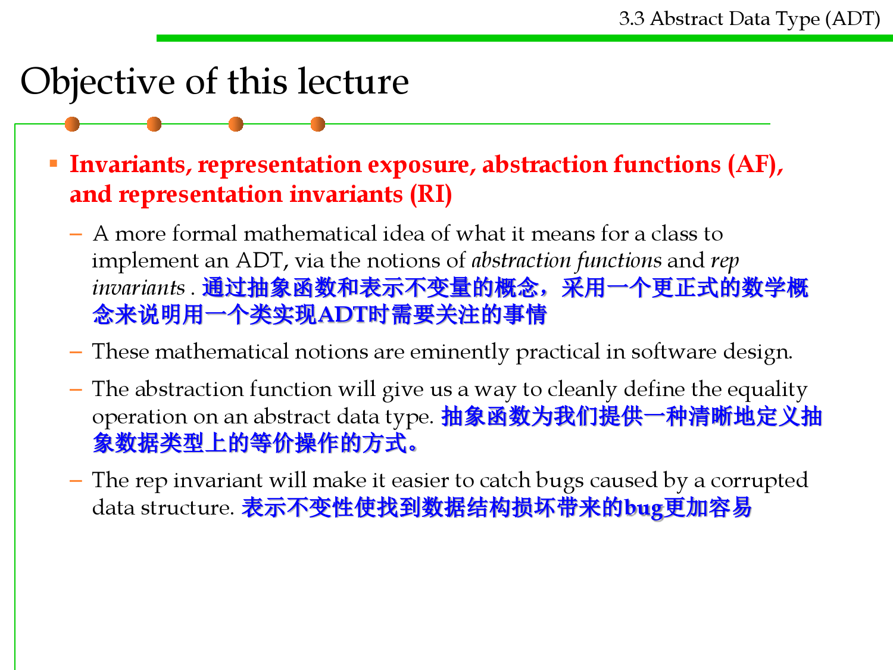
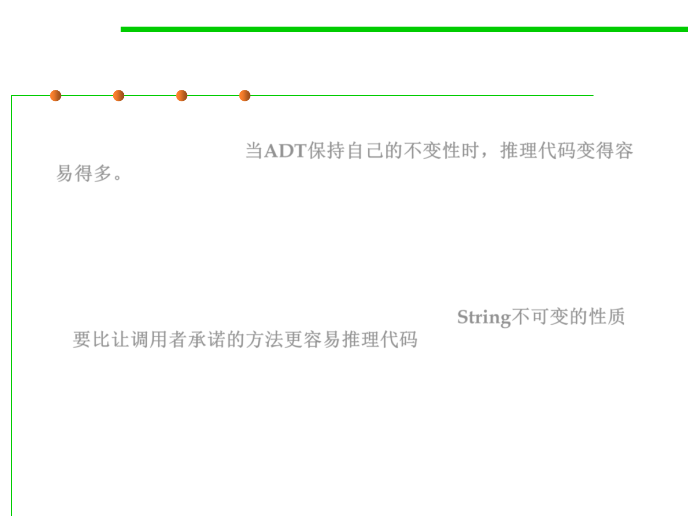
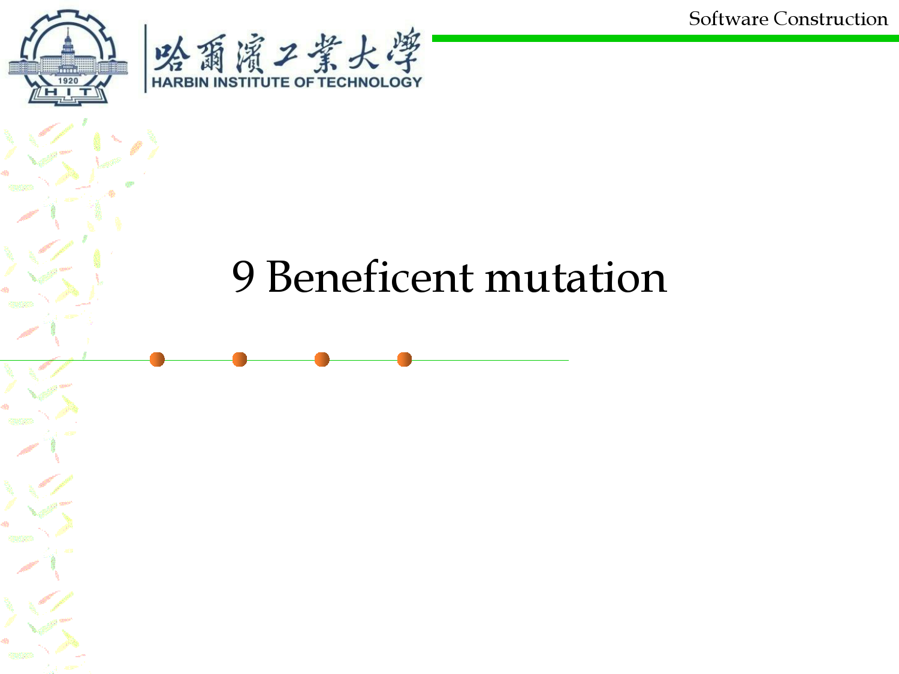
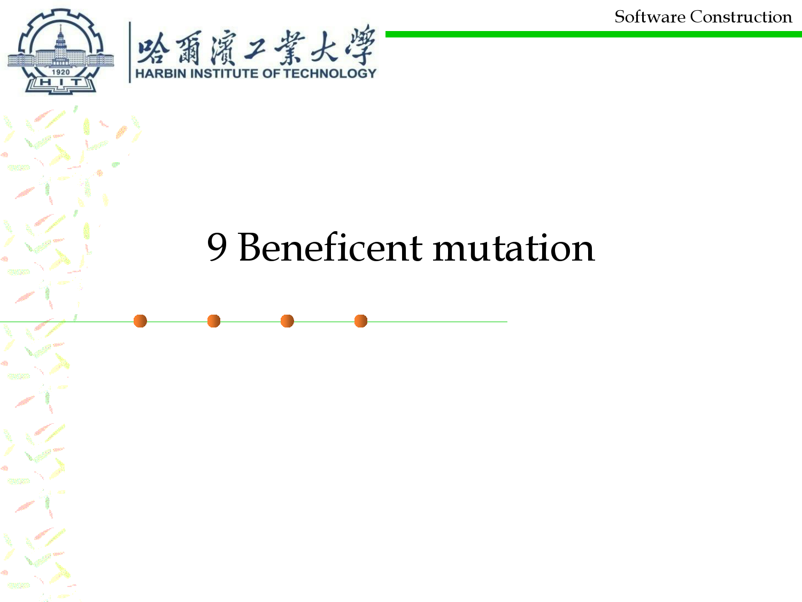
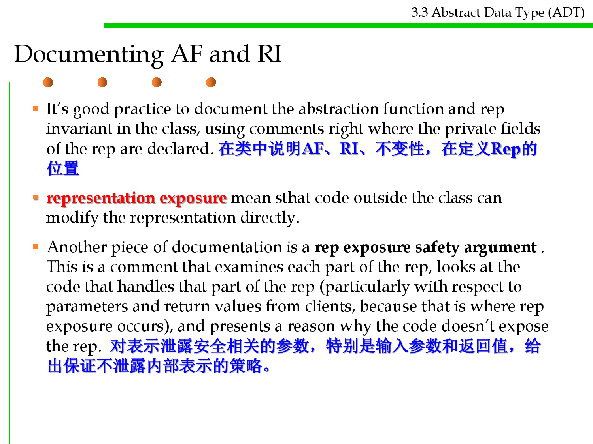
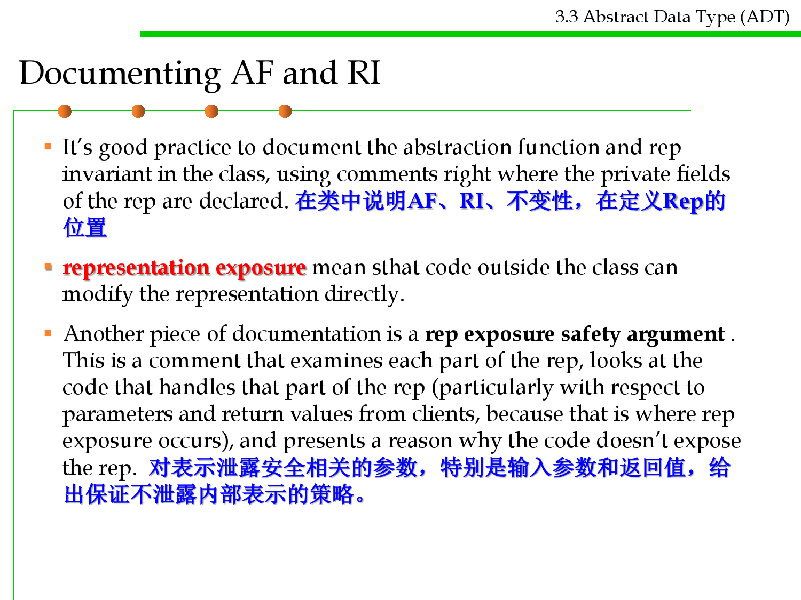

微信公众号[深容Pubmed文献检索] 1. 此处右键：选菜单【翻成中文（简体）】 2. 翻译后，此处右键：选菜单【打印...】成PDF格式
建议屏幕分辨率：1920X1080；如果屏幕太小，可以按Ctrl + 或 Ctrl -缩放网页。

Software Construction
Chapter 3: Abstract Data Type (ADT) and
Object-Oriented Programming (OOP)
3.3 Abstract Data Type (ADT)
Xu Hanchuan
xhc@hit.edu.cn
March 19, 2019

Outline
1. Abstraction and User-Defined Types
2. Classification of operations in ADT
3. Abstract Data Type Examples
4. Design principles of ADT
5. Representation Independence (RI)
6. Testing an ADT
3.3 Abstract Data Type (ADT)

Outline
3.3 Abstract Data Type (ADT)
7. Invariants
8. Rep Invariant and Abstraction Function
9. Beneficent mutation
10. Documenting the AF, RI, and Safety from Rep Exposure
11. ADT invariants replace preconditions
12. Summary
Objective of this lecture
3.3 Abstract Data Type (ADT)
▪ Abstract data types and representation independence: enable us to
separate how we use a data structure in a program from the
particular form of the data structure itself. 掌握抽象数据类型和表示
独立性，将数据结构的使用与数据结构自身的形式分离
– Abstract data types address a particularly dangerous problem: clients
making assumptions about the type’s internal representation. 重点解决
问题：调用者在使用时对类型的内部表示进行假设，进而产生依赖
– We’ll see why this is dangerous and how it can be avoided.
– We’ll also discuss the classification of operations, and some principles of
good design for abstract data types.

Objective of this lecture
3.3 Abstract Data Type (ADT)
▪ Invariants, representation exposure, abstraction functions (AF),
and representation invariants (RI)
– A more formal mathematical idea of what it means for a class to
implement an ADT, via the notions of abstraction functions and rep
invariants . 通过抽象函数和表示不变量的概念，采用一个更正式的数学概
念来说明用一个类实现ADT时需要关注的事情
– These mathematical notions are eminently practical in software design.
– The abstraction function will give us a way to cleanly define the equality
operation on an abstract data type. 抽象函数为我们提供一种清晰地定义抽
象数据类型上的等价操作的方式。
– The rep invariant will make it easier to catch bugs caused by a corrupted
data structure. 表示不变性使找到数据结构损坏带来的bug更加容易

Software Construction
1 Abstraction and User-Defined
Types

What abstraction means
3.3 Abstract Data Type (ADT)
▪ Abstract data types are an instance of a general principle in
software engineering, which goes by many names:
– Abstraction(抽象): Omitting or hiding low-level details with a simpler,
higher-level idea.
– Modularity(模块化): Dividing a system into components or modules, each
of which can be designed, implemented, tested, reasoned about, and
reused separately from the rest of the system.
– Encapsulation(封装): Building walls around a module (a hard shell or
capsule) so that the module is responsible for its own internal behavior,
and bugs in other parts of the system can’t damage its integrity.
– Information hiding(信息隐藏): Hiding details of a module’s
implementation from the rest of the system, so that those details can be
changed later without changing the rest of the system.
– Separation of concerns(关注点分离):Making a feature (or “concern”) the
responsibility of a single module, rather than spreading it across multiple
modules. 模块具有单独的责任，不要将一个责任分散在不同的模块中

User-Defined Types
3.3 Abstract Data Type (ADT)
▪ A programming language came with built-in types (such as
integers, booleans, strings, etc.) and built-in procedures, e.g., for
input and output.
▪ Users could define their own data types and procedures – User-
Defined Types.

3.3 Abstract Data Type (ADT)
SE researchers who made contributions
▪ Ole-Johan Dahl and Kristen Nygaard Dahl (the inventors of the
Simula language)
▪ Antony Hoare (who developed many of the techniques we now use
to reason about abstract types)
▪ David Parnas (who coined the term information hiding and first
articulated the idea of organizing program modules around the
secrets they encapsulated)
▪ Barbara Liskov and John Guttag (the specification of abstract
types, and in programming language support for them)
Data Abstraction
3.3 Abstract Data Type (ADT)
▪ Data abstraction: a type is characterized by the operations you can
perform on it. 数据抽象：一个类型的特征由可对其执行的操作刻画
– A number is something you can add and multiply;
– A string is something you can concatenate(连接) and take substrings of;
– A boolean is something you can negate(取反), and so on.
▪ In a sense, users could already define their own types in early
programming languages: you could create a record type date, for
example, with integer fields for day, month, and year.
▪ But what made abstract types new and different was the focus on
operations: the user of the type would not need to worry about how
its values were actually stored, in the same way that a programmer
can ignore how the compiler actually stores integers. All that matters
is the operations. 抽象类型的新颖性和以往不同之处在于对操作的关
注

Software Construction
2 Classifying Types and Operations
Mutable and immutable types
3.3 Abstract Data Type (ADT)
▪ Types, whether built-in or user-defined, can be classified as
mutable or immutable .
– The objects of a mutable type can be changed: that is, they provide
operations which when executed cause the results of other operations on
the same object to give different results. 可变类型的对象可以被修改，是因
为提供了可修改其状态的操作。
– So Date is mutable, because you can call setMonth() and observe the
change with the getMonth() operation.
– But String is immutable, because its operations create new String
objects rather than changing existing ones.
– Sometimes a type will be provided in two forms, a mutable and an
immutable form. StringBuilder, for example, is a mutable version of
String (although the two are certainly not the same Java type, and are not
interchangeable).
3.3 Abstract Data Type (ADT)
Classifying the operations of an abstract type
▪ Creators create new objects of the type. 产生类型的新对象
– A creator may take an object as an argument, but not an object of the type
being constructed.
▪ Producers create new objects from old objects of the type. 在已有对象
基础上产生新的对象
– The concat() method of String , for example, is a producer: it takes two
strings and produces a new one representing their concatenation.
▪ Observers take objects of the abstract type and return objects of a
different type. 输入抽象类型的对象，返回其他类型的对象
– The size() method of List , for example, returns an int .
▪ Mutators change objects. 改变对象
– The add() method of List , for example, mutates a list by adding an
element to the end.

3.3 Abstract Data Type (ADT)
Classifying the operations of an abstract type
▪ creator : t* → T
▪ producer : T+, t* → T
▪ observer : T+, t* → t
▪ mutator : T+, t* → void | t | T
▪ Each T is the abstract type itself;
▪ Each t is some other type.
▪ The + marker indicates that the type may occur one or more times
in that part of the signature.
▪ The * marker indicates that it occurs zero or more times.
▪ The | indicates or.

Signature of an operation
3.3 Abstract Data Type (ADT)
▪ String.concat() as a producer
– concat: String × String → String
▪ List.size() as an observer
– size: List → int
▪ String.regionMatches as a observer
– regionMatches:
String × boolean × int × String × int × int → Boolean
– public boolean regionMatches(boolean ignoreCase, int toffset, String
other, int ooffset, int len) 用于检测两个字符串在一个长度区域内是否相等

Signature of a creator
3.3 Abstract Data Type (ADT)
▪ A creator is either implemented as a constructor , like new
ArrayList(), or simply a static method instead, like
Arrays.asList().
– A creator implemented as a static method is often called a factory method.
– The various String.valueOf() (返回参数的字符串形式) methods in Java are
other examples of creators implemented as factory methods.

Signature of a mutator
3.3 Abstract Data Type (ADT)
▪ Mutators are often signaled by a void return type.
▪ A method that returns void must be called for some kind of side-
effect, since it doesn’t otherwise return anything.
▪ But not all mutators return void.
– For example, Set.add() returns a boolean that indicates whether the set
was actually changed.
– In Java’s graphical user interface toolkit, Component.add() returns the
object itself, so that multiple add() calls can be chained together.


Software Construction
3 Abstract Data Type Examples

int
3.3 Abstract Data Type (ADT)
▪ int is Java’s primitive integer type. int is immutable, so it has no
mutators.
– creators: the numeric literals 0 , 1 , 2 , …
– producers: arithmetic operators + , - , * , /
– observers: comparison operators == , != , < , >
– mutators: none (it’s immutable)

List
3.3 Abstract Data Type (ADT)
▪ List is Java’s list type and is mutable.
▪ List is also an interface, which means that other classes provide
the actual implementation of the data type. These classes include
ArrayList and LinkedList .
– creators: ArrayList and LinkedList constructors,
Collections.singletonList
– producers: Collections.unmodifiableList
– observers: size , get
– mutators: add , remove , addAll , Collections.sort

String
3.3 Abstract Data Type (ADT)
▪ String is Java’s string type. String is immutable.
– creators: String constructors
– producers: concat , substring , toUpperCase
– observers: length , charAt
– mutators: none (it’s immutable)
Realizing ADT Concepts in Java
3.3 Abstract Data Type (ADT)

3.3 Abstract Data Type (ADT)
An abstract type is defined by its operations
▪ The essential idea here is that an abstract
data type is defined by its operations.
– The set of operations for a type T, along
with their specifications, fully characterize
what we mean by T. 类型是由其操作集以及
规格说明所表征的。
– So, for example, when we talk about the List
type, what we mean is not a linked list or an
array or any other specific data structure for
representing a list. Instead we mean a set of
opaque (不透明的) values – the possible
objects that can have List type – that satisfy
the specifications of all the operations of List:
get(), size(), etc.

3.3 Abstract Data Type (ADT)
An abstract type is defined by its operations
▪ The essential idea here is that an abstract
data type is defined by its operations.
– The values of an abstract type are opaque in
the sense that a client can’t examine the data
stored inside them, except as permitted by
operations. 抽象类型的值是不透明的，因为
客户端无法检查存储在其中的数据，除非操作
允许。
– Expanding our metaphor of a specification
firewall, you might picture values of an
abstract type as hard shells, hiding not just
the implementation of an individual
function, but of a set of related functions
(the operations of the type) and the data
they share (the private fields stored inside
values of the type). 隐藏了数据和实现

Software Construction
4 Designing an Abstract Type

Designing an Abstract Type
3.3 Abstract Data Type (ADT)
▪ Designing an abstract type involves choosing good operations and
determining how they should behave. ADT的设计需要选择良好的操
作以及确定操作的行为
▪ Rules of thumb 1
– It’s better to have a few, simple operations that can be combined in
powerful ways, rather than lots of complex operations. 设计一组简单操作
，通过简单操作的组合实现负责的操作
– Each operation should have a well-defined purpose, and should have a
coherent behavior rather than a panoply(完整的/全部的) of special cases.
操作的行为应是内聚的(单一职责)，某个操作不要包罗万象的将所有特例都
考虑进去)
– We probably shouldn’t add a sum operation to List , for example. It might
help clients who work with lists of integers, but what about lists of
strings? Or nested lists? All these special cases would make sum a hard
operation to understand and use. List中不应增加sum方法，缺乏通用性
Designing an Abstract Type
3.3 Abstract Data Type (ADT)
▪ Rules of thumb 2
▪ The set of operations should be adequate in the sense that there
must be enough to do the kinds of computations clients are likely
to want to do. 操作集应该是完备的，覆盖该类型所有应支持的行为
– A good test is to check that every property of an object of the type can be
extracted. 判断方法：检查对象的每个需要被访问到的属性是否都能够被访
问到
– For example, if there were no get operation, we would not be able to find
out what the elements of a list are.
– Basic information should not be inordinately difficult to obtain. 提供基本
信息的获取方法
– For example, the size method is not strictly necessary for List, because we
could apply get on increasing indices until we get a failure, but this is
inefficient and inconvenient.
Designing an Abstract Type
▪ Rules of thumb 3
3.3 Abstract Data Type (ADT)
▪ The type may be generic: a list or a set, or a graph, for example. Or
it may be domain-specific: a street map, an employee database, a
phone book, etc. But it should not mix generic and domain-specific
features. 类型不应该混合领域无关的（通用的）和领域特定的特征
– A Deck(纸牌) type intended to represent a sequence of playing cards
shouldn’t have a generic add method that accepts arbitrary objects like
integers or strings.
– Conversely, it wouldn’t make sense to put a domain-specific method like
dealCards into the generic type List .

Software Construction
5 Representation Independence

Representation Independence
3.3 Abstract Data Type (ADT)
▪ Critically, a good abstract data type should be representation
independent 好的ADT应该是表示独立的
– This means that the use of an abstract type is independent of its
representation (the actual data structure or data fields used to
implement it), so that changes in representation have no effect on code
outside the abstract type itself.
▪ For example, the operations offered by List are independent of
whether the list is represented as a linked list or as an array.
▪ You won’t be able to change the representation of an ADT at all
unless its operations are fully specified with preconditions and
postconditions, so that clients know what to depend on, and you
know what you can safely change. 只有当我们通过前置条件和后置条
件充分明确了ADT的操作，使调用者知道可以依赖哪些内容，实现者
知道可以安全更改哪些内容，此时才可以修改内部表示。
▪
3.3 Abstract Data Type (ADT)
Example: Different Representations for Strings

3.3 Abstract Data Type (ADT)
A simple representation for MyString
▪ For now, let’s look at a simple representation for MyString : just an
array of characters, exactly the length of the string, with no extra
room at the end. Here’s how that internal representation would be
declared, as an instance variable within the class:
private char[] a;
▪ With that choice of representation, the operations would be
implemented in a straightforward way:
3.3 Abstract Data Type (ADT)
The corresponding implementation for MyString

3.3 Abstract Data Type (ADT)
Another representation for better performance
▪ Because this data type is immutable, the substring operation
doesn’t really have to copy characters out into a fresh array.
▪ It could just point to the original MyString object’s character array
and keep track of the start and end that the new substring object
represents.
▪ To implement this optimization, we could change the internal
representation of this class to:
private char[] a;
private int start;
private int end;
Now the implementation is …
3.3 Abstract Data Type (ADT)
3.3 Abstract Data Type (ADT)
What is Representation Independence
▪ Because MyString ’s existing clients depend only on the specs of
its public methods, not on its private fields, we can make this
change without having to inspect and change all that client code.
MyString的现有调用者仅依赖其public方法，而不依赖其private字段
，因此我们可以在不检查和更改所有调用者代码的情况下进行更改。
▪ That’s the power of representation independence.


Software Construction
6 Testing an Abstract Data Type
How to test an ADT
3.3 Abstract Data Type (ADT)
▪ We build a test suite for an abstract data type by creating tests for
each of its operations.
▪ These tests inevitably interact with each other. 测试方法间不可避免
的会相互影响
▪ The only way to test creators, producers, and mutators is by calling
observers on the objects that result, and likewise, the only way to test
observers is by creating objects for them to observe.
3.3 Abstract Data Type (ADT)
Partition the input spaces of ADT operations

3.3 Abstract Data Type (ADT)
Test suite that covers all partitions


Software Construction
7 Invariants

Invariants of an ADT
3.3 Abstract Data Type (ADT)
▪ The most important property of a good abstract data type is that
it preserves its own invariants 好的ADT最重要属性是保持其不变性
▪ An invariant is a property of a program that is always true, for every
possible runtime state of the program. 在程序运行过程中，程序始终
保持不变的性质
– Immutability is one crucial invariant: once created, an immutable object
should always represent the same value, for its entire lifetime. 不可变就是
不可变类型的重要不变性
▪ Saying that the ADT preserves its own invariants means that the
ADT is responsible for ensuring that its own invariants hold. ADT自
身有责任确保其不变性，而不是依赖于调用者或者其他模块
– It doesn’t depend on good behavior from its clients.
– Correctness doesn’t depend on other modules.

Why are invariants required?
3.3 Abstract Data Type (ADT)
▪ When an ADT preserves its own invariants, reasoning about the code
becomes much easier. 当ADT保持自己的不变性时，推理代码变得容
易得多。
– If you can count on the fact that Strings never change, you can rule out
that possibility when you’re debugging code that uses Strings – or when
you’re trying to establish an invariant for another ADT that uses Strings.
– Contrast that with a string type that guarantees that it will be immutable
only if its clients promise not to change it. Then you’d have to check all the
places in the code where the string might be used. String不可变的性质
要比让调用者承诺的方法更容易推理代码
▪ … Assume clients will try to destroy invariants (malicious hackers
or honest mistakes有意或者无意的)

Software Construction
8 Rep Invariant and Abstraction
Function
Two spaces of values
3.3 Abstract Data Type (ADT)
▪ R: the space of representation values
(rep values) consists of the values of the
actual implementation entities. 实现时用到
的值空间
– In simple cases, an abstract type will be implemented as a single object,
but more commonly a small network of objects is needed, so this value is
actually often something rather complicated.
▪ A: the space of abstract values consists of the values that the type is
designed to support. 需要支持的值空间
– They’re platonic(柏拉图式的) entities that don’t exist as described, but they
are the way we want to view the elements of the abstract type, as clients of
the type.
– For example, an abstract type for unbounded integers might have the
mathematical integers as its abstract value space; the fact that it might be
implemented as an array of primitive (bounded) integers, say, is not
relevant to the user of the type.
Example of two spaces
3.3 Abstract Data Type (ADT)
▪ The implementor of the abstract type must be interested in the
representation values, since it is the implementor’s job to achieve the
illusion of the abstract value space using the rep value space.
▪ Suppose, for example, that we choose to use a string to represent a
set of characters:
▪ Then the rep space R contains Strings, and the abstract space A is
mathematical sets of characters.
Mapping between R and A
3.3 Abstract Data Type (ADT)
▪ Every abstract value is mapped to by
some rep value (surjective, 满射).
– The purpose of implementing the abstract type is
to support operations on abstract values. Presumably, then, we will need
to be able to create and manipulate all possible abstract values, and they
must therefore be representable.
▪ Some abstract values are mapped to by more than one rep
value (not injective, 未必单射).
– This happens because the representation isn’t a tight encoding. There’s
more than one way to represent an unordered set of characters as a string.
▪ Not all rep values are mapped (not bijective, 未必双射).
– In this case, the string “abbc” is not mapped. In this case, we have decided
that the string should not contain duplicates. This will allow us to
terminate the remove method when we hit the first instance of a particular
character, since we know there can be at most one.
Abstraction Function 抽象函数
3.3 Abstract Data Type (ADT)
▪ An abstraction function that maps rep values to the abstract values
they represent:
AF : R → A
▪ The arcs in the diagram show the abstraction function.
▪ In the terminology of functions, the properties can be expressed by
saying that the function is surjective (also called onto), not
necessarily injective ( one-to-one ) and therefore not necessarily
bijective, and often partial.(AF是满射的、未必单射、未必双射)
Rep Invariant
3.3 Abstract Data Type (ADT)
▪ A rep invariant that maps rep values to booleans:
RI : R → boolean
▪ For a rep value r , RI(r) is true if and only if r is mapped by AF .
▪ In other words, RI tells us whether a given rep value is well-
formed. RI告诉我们空间R中的r是否被AF映射到了空间A中的某个值
▪ Alternatively, you can think of RI as a set: it’s the subset of rep
values on which AF is defined. RI形成了空间R的一个子集(子集中的
所有元素均被AF映射到了空间A中)
Documenting RI and AF
3.3 Abstract Data Type (ADT)
▪ Both the rep invariant and the abstraction function should be
documented in the code, right next to the declaration of the rep itself:

What determine AF and RI?
3.3 Abstract Data Type (ADT)
▪ A common confusion about abstraction functions and rep
invariants is that they are determined by the choice of rep and
abstract value spaces, or even by the abstract value space alone. AF
和 RI 既不由选定的表示值空间决定，也不由抽象值空间单独决定
▪ The abstract value space alone doesn’t determine AF or RI:
– There can be several representations for the same abstract type.
– A set of characters could equally be represented as a string, as above, or as
a bit vector, with one bit for each possible character. Clearly we need two
different abstraction functions to map these two different rep value spaces.
▪ Defining a type for the rep, and thus choosing the values for the
space of rep values, does not determine which of the rep values will
be deemed to be legal, and of those that are legal, how they will be
interpreted. 表示值空间确定后，AF和RI也不是确定的
What determine AF and RI?
3.3 Abstract Data Type (ADT)
▪ For example, if we allow duplicates in strings, but at the same time
require that the characters be sorted, appearing in nondecreasing
order, then there would be the same rep value space but different
rep invariant.
What determine AF and RI?
3.3 Abstract Data Type (ADT)
▪ Even with the same type for the rep value space and the same rep
invariant RI, we might still interpret the rep differently, with
different abstraction functions AF. 即使相同的表示值空间和相同的
表示不变性RI，我们仍然可以用不同的抽象函数AF来映射。
▪ Perhaps we’ll interpret consecutive pairs of characters as
subranges, so that the string rep "acgg" is interpreted as two range
pairs, [a-c] and [g-g], and therefore represents the set {a,b,c,g}.
3.3 Abstract Data Type (ADT)
How RI and AF influence ADT design
▪ The essential point is that designing an abstract type means not only
choosing the two spaces – the abstract value space for the
specification and the rep value space for the implementation – but
also deciding what rep values to use(RI) and how to interpret
them(AF). ADT设计的关键：不仅是选择两个空间(面向规格说明的抽
象值空间和面向实现的表示值空间), 而且要决定表示值(RI)和如何映
射(AF)。
▪ It’s critically important to write down these assumptions in your
code, as we’ve done above, so that future programmers (and your
future self) are aware of what the representation actually means.
Why? What happens if different implementers disagree about the
meaning of the rep?

3.3 Abstract Data Type (ADT)
Example: ADT for Rational Numbers
RI and AF of this example
3.3 Abstract Data Type (ADT)
▪ The RI requires that numerator/denominator pairs be in reduced
form (i.e., lowest terms), so pairs like (2,4) and (18,12) above should
be drawn as outside the RI.


Checking the Rep Invariant
3.3 Abstract Data Type (ADT)
▪ The rep invariant isn’t just a neat mathematical idea. If your
implementation asserts the rep invariant at run time, then you can
catch bugs early. 在实现中采用断言技术来检查不变性是否保持，可
以更早地捕获bug
▪ You should certainly call checkRep() to assert the rep invariant at
the end of every operation that creates or mutates the rep (creators,
producers, and mutators). Look back at the RatNum code above, and
you’ll see that it calls checkRep() at the end of both constructors. 应
该在所有有create和mutate作用类型方法的最后检查不变性
▪ Observer methods don’t normally need to call checkRep(), but it’s
good defensive practice to do so anyway.
– Calling checkRep() in every method, including observers, means you’ll
be more likely to catch rep invariant violations caused by rep exposure.


No Null Values in the Rep
3.3 Abstract Data Type (ADT)
▪ null values are troublesome and unsafe, so that we try to remove
them from our programming entirely.
▪ The preconditions and postconditions of our methods implicitly
require that objects and arrays be non-null.
▪ We extend that prohibition to the reps of abstract data types. By
default, the rep invariant implicitly includes x != null for every
reference x in the rep that has object type (including references inside
arrays or lists).
▪ Although you don’t need to state it in a rep invariant comment, you
still must implement the x != null check, and make sure that
your checkRep() correctly fails when x is null. 即使在注释中进行了
阐述，也要在checkRep中检查
 

Software Construction
9 Beneficent mutation
Beneficent mutation
3.3 Abstract Data Type (ADT)
▪ Recall that a type is immutable if and only if a value of the type
never changes after being created.
▪ With our new understanding of the abstract space A and rep space R,
we can refine this definition: the abstract value should never
change. 抽象值永远不可改变
▪ But the implementation is free to mutate a rep value as long as it
continues to map to the same abstract value, so that the change is
invisible to the client. 在确保其映射的抽象值不变前提下，表示值可
以变化
▪ This kind of change is called beneficent mutation.
3.3 Abstract Data Type (ADT)
An example of beneficent mutation
▪ RatNum: this rep has a weaker
rep invariant that doesn’t require
the numerator and denominator
to be stored in lowest terms:(不要
求不含公约数)
3.3 Abstract Data Type (ADT)
An example of beneficent mutation
▪ This weaker rep invariant allows a sequence of RatNum arithmetic
operations to simply omit reducing the result to lowest terms. But
when it’s time to display a result to a human, we first simplify it:参
与运算时，可以有公约数；显示输出时，需要简化（没有公约数）
3.3 Abstract Data Type (ADT)
An example of beneficent mutation
▪ Notice that this toString implementation reassigns the private
fields numerator and denominator, mutating the representation –
even though it is an observer method on an immutable type!
▪ But, crucially, the mutation doesn’t change the abstract value.
▪ Dividing both numerator and denominator by the same common
factor, or multiplying both by -1, has no effect on the result of the
abstraction function, AF(numerator, denominator) =
numerator/denominator.
▪ Another way of thinking about it is that the AF is a many-to-one
function, and the rep value has changed to another that still maps to
the same abstract value. 另外一种理解：AF是多对一的映射，rep
value改变为了“多”中的另外一个。
▪ So the mutation is harmless, or beneficent.

3.3 Abstract Data Type (ADT)
Why is beneficent mutation required?
▪ This kind of implementer freedom often permits performance
improvements like: 实现的自由为性能改善提供了可能
– Caching
– Data structure rebalancing
– Lazy computation(惰性计算、延迟计算，例：尽可能延迟表达式求值，仅
在必要时，而不是在声明时，对表达式进行求值)
– Lazy cleanup

Software Construction
10 Documenting the AF, RI, and
Safety from Rep Exposure
 

Documenting AF and RI
3.3 Abstract Data Type (ADT)
▪ It’s good practice to document the abstraction function and rep
invariant in the class, using comments right where the private fields
of the rep are declared. 在类中说明AF、RI、不变性，在定义Rep的
位置
▪ representation exposure mean sthat code outside the class can
modify the representation directly.
▪ Another piece of documentation is a rep exposure safety argument .
This is a comment that examines each part of the rep, looks at the
code that handles that part of the rep (particularly with respect to
parameters and return values from clients, because that is where rep
exposure occurs), and presents a reason why the code doesn’t expose
the rep. 对表示泄露安全相关的参数，特别是输入参数和返回值，给
出保证不泄露内部表示的策略。
3.3 Abstract Data Type (ADT)
Documenting AF and RI: example 1
3.3 Abstract Data Type (ADT)
Documenting AF and RI: example 2

How to establish invariants
3.3 Abstract Data Type (ADT)
▪ An invariant is a property that is true for the entire program – which in
the case of an invariant about an object, reduces to the entire lifetime of
the object.
▪ To make an invariant hold, we need to:
– Make the invariant true in the initial state of the object; 在初始化时使之为真
– Ensure that all changes to the object keep the invariant true. 所有修改都使不
变性得到保持
▪ Translating this in terms of the types of ADT operations, this means:
– Creators and producers must establish the invariant for new object
instances; Creators and producers必须为新创建的对象建立不变性
– Mutators and observers must preserve the invariant. Mutators and
observers必须保持不变性。
How to establish invariants
3.3 Abstract Data Type (ADT)
▪ The risk of rep exposure makes the situation more complicated. If the
rep is exposed, then the object might be changed anywhere in the
program, not just in the ADT’s operations, and we can’t guarantee that
the invariant still holds after those arbitrary changes.
▪ So the full rule for proving invariants is: Structural induction --- If an
invariant of an abstract data type is
– established by creators and producers 只通过creators and producers创建
– preserved by mutators, and observers 通过mutators and observers保持
– no representation exposure occurs
没有表示泄露发生
then the invariant is true of all instances of the abstract data type.

Software Construction
11 ADT invariants replace
preconditions
3.3 Abstract Data Type (ADT)
ADT invariants replace preconditions
▪ An enormous advantage of a well-designed abstract data type is that
it encapsulates and enforces properties that we would otherwise
have to stipulate in a precondition. 良好设计的ADT，可以替代spec
中的部分preconditions


Software Construction
Summary

Summary
3.3 Abstract Data Type (ADT)
▪ Abstract data types are characterized by their operations.
▪ Operations can be classified into creators, producers, observers, and
mutators.
▪ An ADT’s specification is its set of operations and their specs.
▪ A good ADT is simple, coherent, adequate, and representation-
independent.
▪ An ADT is tested by generating tests for each of its operations, but
using the creators, producers, mutators, and observers together in
the same tests.

Summary
3.3 Abstract Data Type (ADT)
▪ Safe from bugs. A good ADT offers a well-defined contract for a
data type, so that clients know what to expect from the data type,
and implementors have well-defined freedom to vary.
▪ Easy to understand. A good ADT hides its implementation behind a
set of simple operations, so that programmers using the ADT only
need to understand the operations, not the details of the
implementation.
▪ Ready for change. Representation independence allows the
implementation of an abstract data type to change without requiring
changes from its clients.

Summary
3.3 Abstract Data Type (ADT)
▪ An invariant is a property that is always true of an ADT object
instance, for the lifetime of the object.
▪ A good ADT preserves its own invariants. Invariants must be
established by creators and producers, and preserved by observers
and mutators.
▪ The rep invariant specifies legal values of the representation, and
should be checked at runtime with checkRep() .
▪ The abstraction function maps a concrete representation to the
abstract value it represents.
▪ Representation exposure threatens both representation
independence and invariant preservation.

Summary
3.3 Abstract Data Type (ADT)
▪ Safe from bugs. A good ADT preserves its own invariants, so that
those invariants are less vulnerable to bugs in the ADT’s clients, and
violations of the invariants can be more easily isolated within the
implementation of the ADT itself. Stating the rep invariant explicitly,
and checking it at runtime with checkRep(), catches
misunderstandings and bugs earlier, rather than continuing on with
a corrupt data structure.
▪ Easy to understand. Rep invariants and abstraction functions
explicate the meaning of a data type’s representation, and how it
relates to its abstraction.
▪ Ready for change. Abstract data types separate the abstraction from
the concrete representation, which makes it possible to change the
representation without having to change client code.

Software Construction
The end
March 19, 2019